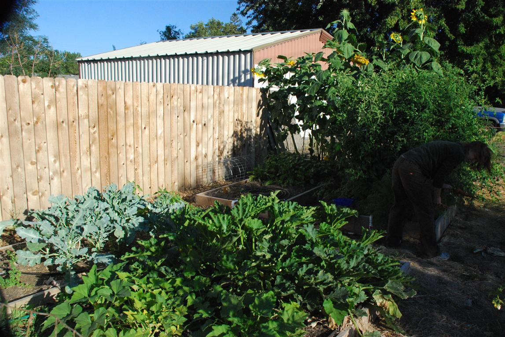
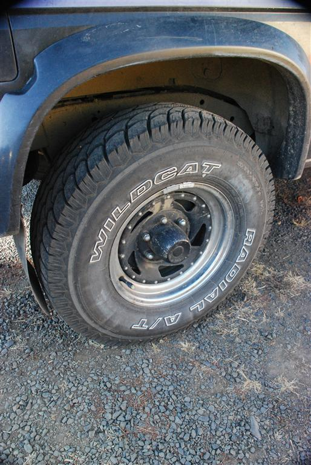
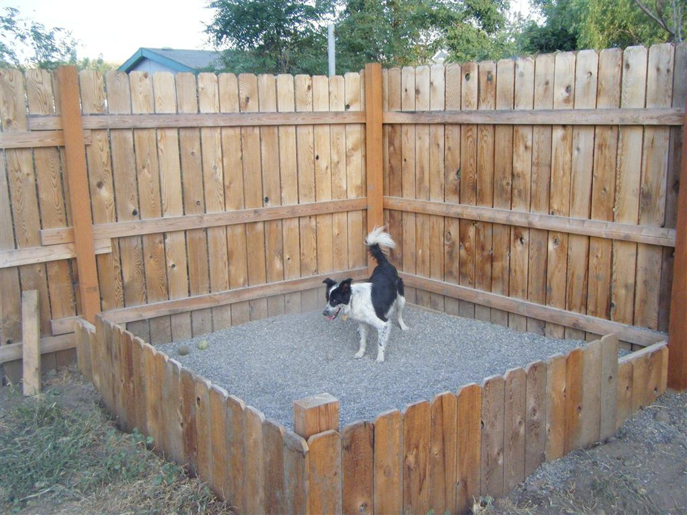

2010_08_OutdoorProjects
Written by Steven Wednesday, 08 September 2010 15:02
Well, Tara and I have been busy doing
projects around the house. We are trying to prepare for fall and
winter. We are also just trying to finish up a lot of unfinished
projects that are like 95% done.
We
finally finished the dogs playpen. They really love it, especially
Aspen. Now if we can only get them to play in it instead of digging in
the yard while we are gone during the day!
Our
garden is producing! Tara and I are eating lots of veggies from our
garden. We are eating lettuce, zucchini, yellow squash, carrots,
tomatoes, green beans, & green peppers. Tara is eating the beets
by herself...yuck! We also have almost 10 foot tall sunflowers.
We
are in the process of staining/waterproofing our fence! It looks
really nice, but it is a lot of work and kinda messy!
We
recently had a flat tire on our way up to Spring Mtn to go rock
climbing and wood collecting. We still got to go climbing and gather
wood, but it involved a trip back to M-F at 35 mph, a morning at Les
Schwab, and another trip back to the mountains the following day! I've
included a picture of our new tires...I like them!
Our
front flower bed is doing great. We have a variety of native
plants...and a bamboo (Tara let me put that one in although it isn't
doing very good =( ). We have a couple of red twig dogwoods, mock
orange, a variety of grasses, a huge elderberry, some penstemon, and
douglas spirea. Unfortunately we have killed our pussywillow on the
west site of the house. =( However, our two big trees in the backyard
are still doing good, even though the dogs have dug them up a couple o'
times.
I've
finished the wood shelter (except for the roof and electrical for a
light). We have even started to fill it up with wood!
|  |
||
|  |
||
 . . |
||
|  |
{kind=link}
{kind=link}
{kind=link}
{kind=link}
{kind=link}
{kind=link}
{kind=link}
{kind=link}
{kind=link}
{kind=link}
{kind=link}
{kind=link}
{kind=link}
{kind=link}
{kind=link}
{kind=link}
{kind=link}
{kind=link}